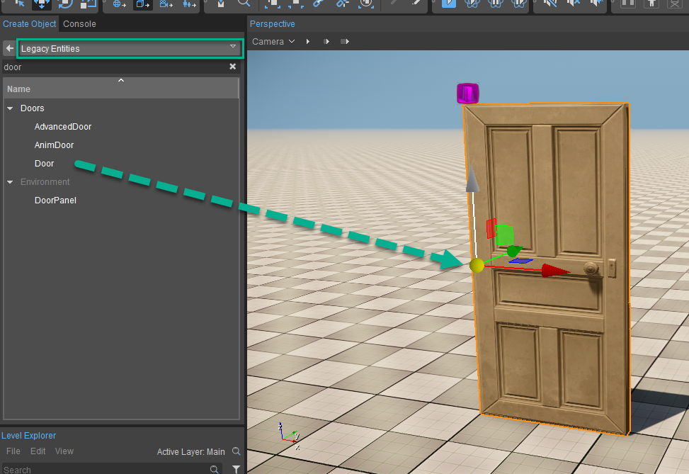
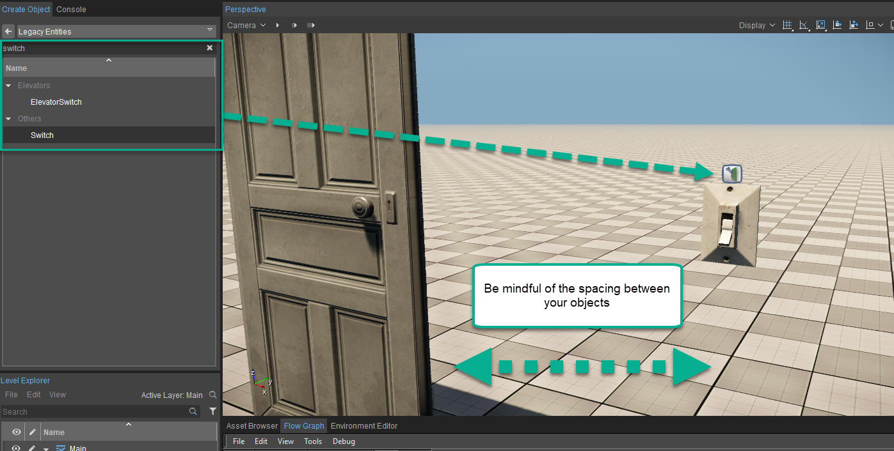
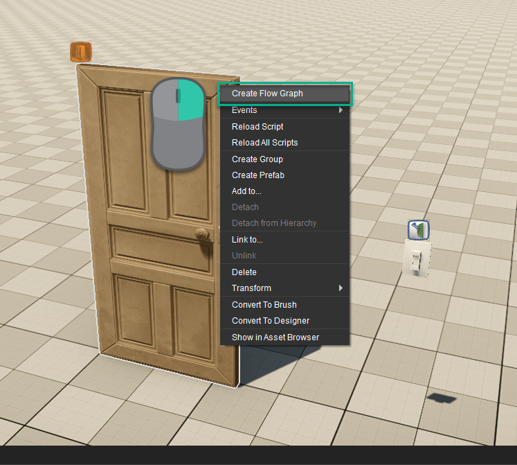
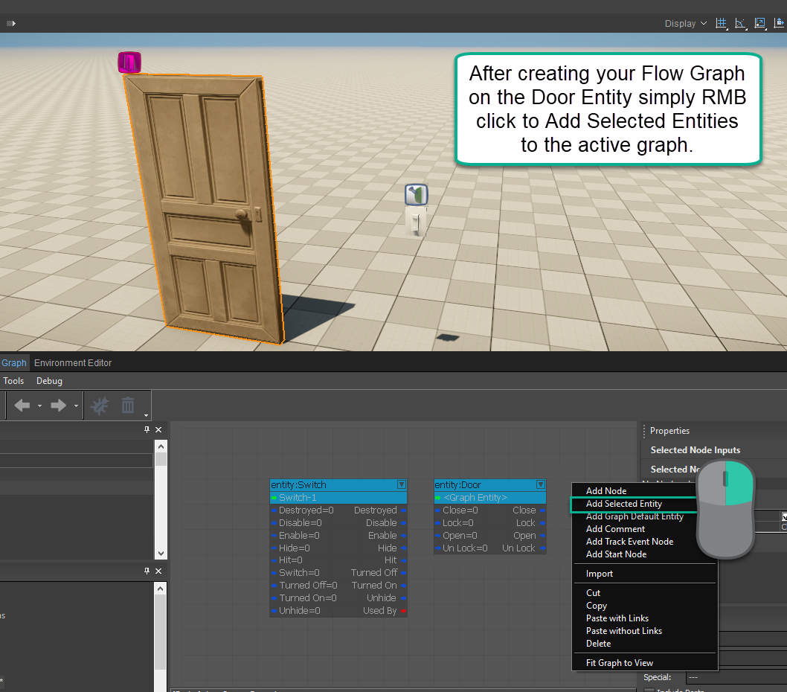
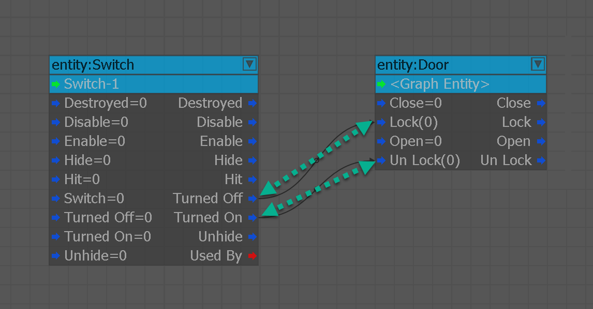
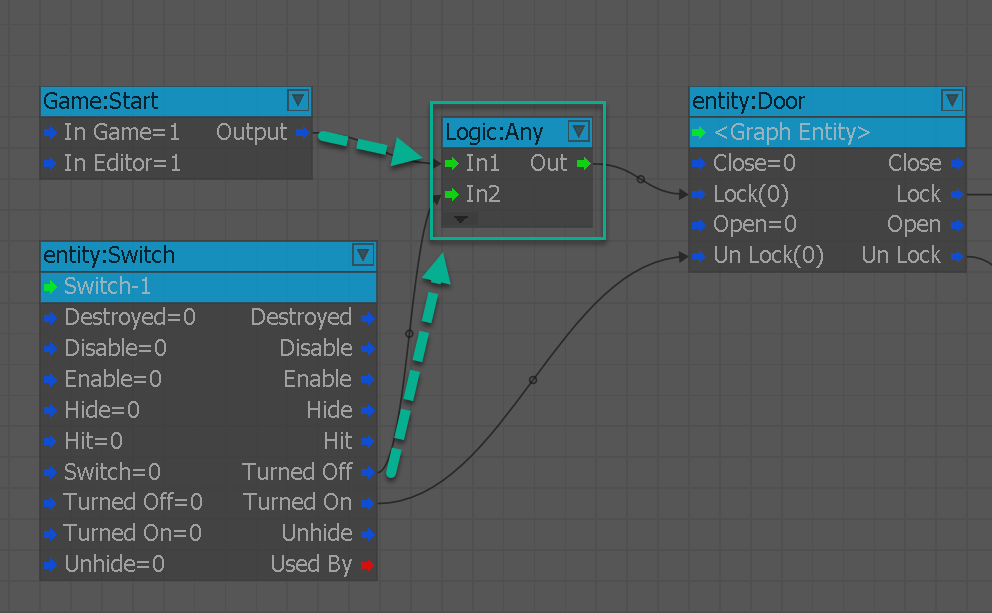
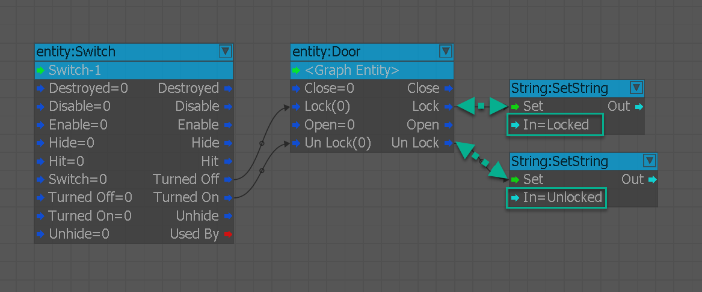
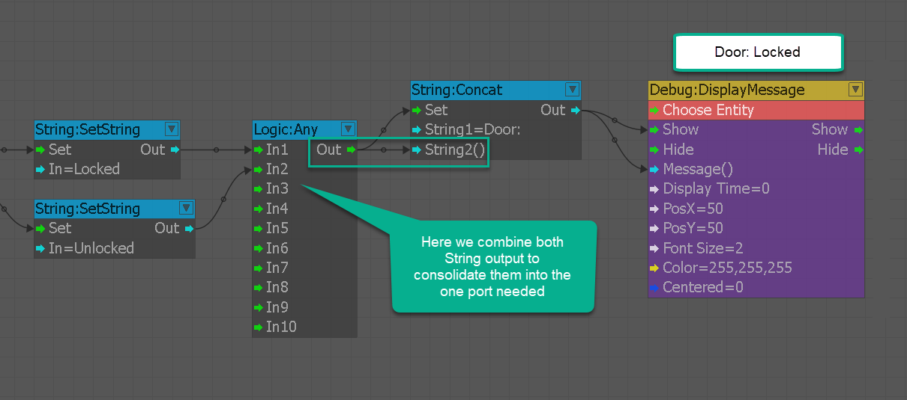
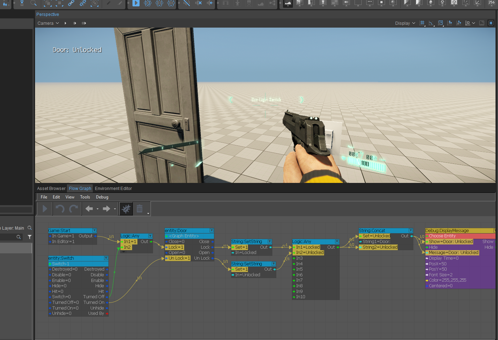

How do I set up switches and communicate?
To do the most basic form of testing we will be setting up the scenario of having to open a door within our game, alongside this we will also have to be checking as to whether the player has permission to enter through the door at all. We will also be printing to the screen the fact that the Door is locked and be adding a String Concatenate node that will allow us to combine words and values dynamically to print to the screen.
How to Open a Locked Door
Follow the steps below to create an interaction use case where the player must unlock a door:
- Add both the Switch Entity and the Door Entity by going to Create Object -> Legacy Entities and then pathing or searching for the names Door and Switch to find them quicker. Drag them into your scene and place them as shown in the picture below.
- Once placed we can now click RMB the door entity and create a Flow Graph and name it doorLocked. Once Flow Graph has opened you can add both the Door Entity and the Switch to the Flow Graph.
- Now we just have to connect the Turned Off output port of the Switch entity to the Lock input port of the Door entity and the Turned On output port to the Un Lock input port of the Door entity.
(You can test the functionality by going into Game Mode (Ctrl+G). Don't forget to enable debugging mode to make sure all of your ports are firing as intended) - To make the switch reusable, create a Logic:Any node to feed in the Game:Start and Turned Off output ports to combine the triggered event and make sure the on/off switch can cycle.
- Now that we have connected the ports, we can print the value to the screen and only toggle between the words "Locked" and "Unlocked" to be prefixed with the title "Door:".
First, add two String:SetString nodes to be able to plug the output of the Door:Entity node in the Lock and Unlock ports to the respective String value we entered in the node properties. - Now that we have the outputs converted to a string from a true/false we can add the Concatenate node to the graph and prefix the A slot with the title "Door:". Then we will use a Logic:Any node to combine both of the strings to fire into the B port of the String:Concatenate node.
- Finally, add the output of the Concatenate node into the Show and Message slots of a Debug DisplayMessage node to see the unlocked status printed to the screen when we toggle the light switch.
Step 1-1

Step 1-2

Step 2-1

Step 2-2

Step 3

Step 4

Step 5

Step 6

Step 7
